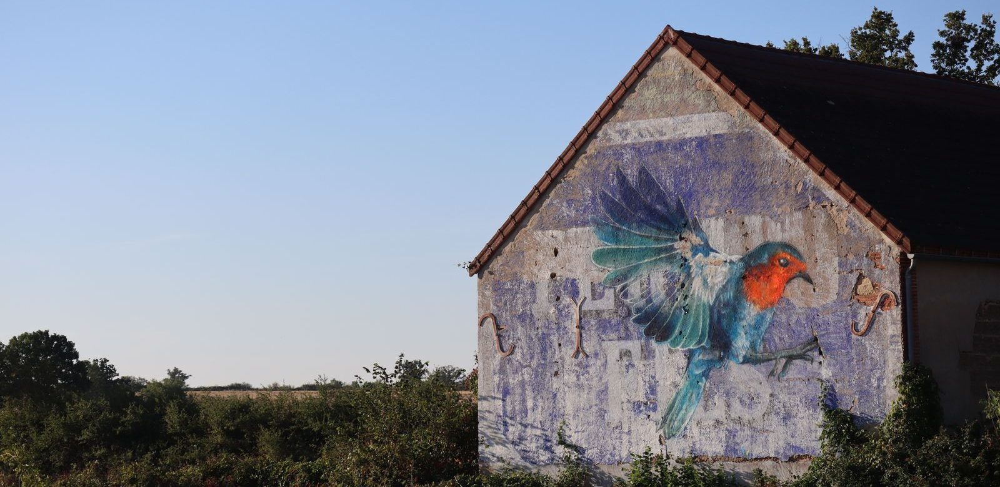

Wie is Miles Morales?
Miles Morales is de tweede Spider-Man: een jongen van dertien uit Brooklyn. Hier lees je hoe hij aan zijn krachten kwam, wat hij kan wat Peter Parker niet kan, en in welke films en games hij zit.

In het kort
Miles Morales is de tweede Spider-Man. Hij is dertien als hij zijn krachten krijgt, woont in Brooklyn in New York, en hij is niet dezelfde persoon als Peter Parker: hij bestaat naast hem. Miles kan twee dingen die Peter niet kan.
| Echte naam | Miles Gonzalo Morales |
| Waar hij woont | Brooklyn, New York |
| Leeftijd | Dertien als hij begint; in latere verhalen zestien |
| School | Brooklyn Visions Academy |
| Eerste keer in een strip | Ultimate Fallout nummer 4, augustus 2011 |
| Bedacht door | Brian Michael Bendis (verhaal) en Sara Pichelli (tekeningen) |
| Zijn stem in de films | Shameik Moore |
| Wat hij extra kan | De venom blast en camouflage |
Hoe hij zijn krachten kreeg
Zijn oom Aaron brak in bij een laboratorium. Zonder dat hij het doorhad, kroop er een spin mee in zijn tas — een spin die in dat lab gemaakt was om de krachten van Spider-Man na te bootsen. In de flat van zijn oom beet die spin Miles. Een paar dagen later liep hij tegen een muur op, en bleef hij daaraan hangen.
Wat hij kan
- Tegen muren en plafonds lopen. Net als Peter Parker.
- Supersterk en supersnel zijn. Hij tilt ongeveer tien ton.
- Zijn spinnenzintuig. Hij voelt gevaar aankomen voordat het er is.
- De venom blast. Dit heeft Peter Parker niet. Miles laadt zijn lichaam op met stroom en kan die met één aanraking loslaten. Daar gaat een tegenstander van tegen de vlakte. Zet hij alles in, dan heet dat een mega venom blast.
- Camouflage. Dit heeft Peter Parker ook niet. Miles kan zichzelf zo aanpassen aan wat achter hem is dat je hem bijna niet meer ziet. Handig als je dertien bent en niet betrapt wilt worden.
- Snel genezen. Een blauwe plek is bij hem een stuk sneller weg.
- Webben schieten. Dat is geen kracht maar techniek: web-shooters aan zijn polsen.
Wie er om hem heen staan
- Jefferson, zijn vader — politieagent, en niet blij met superhelden.
- Rio, zijn moeder — verpleegkundige.
- Aaron, zijn oom — de leukste oom die je kunt wensen, en in het geheim de inbreker The Prowler.
- Ganke Lee, zijn beste vriend — de eerste die het geheim weet, en degene die alles voor hem uitzoekt.
- Peter Parker — de andere Spider-Man, die hem op weg helpt.
- Gwen Stacy — Spider-Gwen, uit een ander universum, en zijn beste vriendin in de tekenfilms.
Zijn tegenstanders
- The Prowler — zijn eigen oom Aaron. Dat maakt hem de moeilijkste tegenstander die Miles heeft.
- Kingpin — de misdaadbaas uit de eerste tekenfilm, die een machine laat bouwen die universums door elkaar gooit.
- The Spot — de schurk uit de tweede tekenfilm, bedekt met gaten waar hij doorheen stapt om ergens anders weer uit te komen.
- Green Goblin — de groene aartsvijand van elke Spider-Man.
- Venom — een zwart wezen van een andere planeet dat zich aan iemand vastplakt.
- Scorpion — een schurk in een pantserpak met een gevaarlijke staart.
In welke films en series zit hij?
De tekenfilms, met de stem van Shameik Moore:
- Spider-Man: Into the Spider-Verse (2018). In Nederland heet hij Spider-Man: Een Nieuw Universum. Hierin wordt Miles Spider-Man en ontmoet hij versies van zichzelf uit andere universums.
- Spider-Man: Across the Spider-Verse (2023). Miles komt honderden andere Spider-Mannen tegen, en krijgt te horen dat hij er eigenlijk niet had moeten zijn.
- Spider-Man: Beyond the Spider-Verse — het derde deel. Aangekondigd voor 18 juni 2027. Die datum is al drie keer verschoven, dus houd er rekening mee dat hij weer opschuift.
De series. Miles is te zien in Ultimate Spider-Man (daar heet hij Kid Arachnid, met de stem van Donald Glover) en in Marvel's Spider-Man op Disney XD, met de stem van Nadji Jeter.
De games. Hij heeft de hoofdrol in Marvel's Spider-Man: Miles Morales (2020, PlayStation en later pc). In Marvel's Spider-Man 2 (2023, PlayStation 5) speel je afwisselend Miles en Peter, en kun je zelf tussen ze wisselen.
👪 Tip voor ouders
De twee tekenfilms zijn de meest kindvriendelijke Spider-Man-films die er zijn: Into the Spider-Verse heeft een Kijkwijzer-advies van 6 jaar, Across the Spider-Verse van 9 jaar. Dat is een stuk lager dan de films met echte acteurs, die meestal 12 jaar hebben. Kijk voor het actuele advies op Kijkwijzer.
Let op bij het zoeken: de naam “Spider-Verse” staat ook op films die er niets mee te maken hebben en die veel ruwer zijn, zoals Venom en Morbius.
💡 Wist je dat?
Miles bestaat dankzij een pyjama. Acteur Donald Glover droeg in een aflevering van de serie Community een Spider-Man-pyjama. Bedenker Brian Michael Bendis zag dat en dacht: dát boek zou ik willen lezen. Jaren later sprak Glover zelf een versie van Miles in. En zijn eerste film won in 2019 een Oscar — de eerste superheldenfilm die dat lukte.
Meer lezen? Op wat is het Spider-Verse staat hoe die andere universums werken, en alle Spider-Man films op een rij zet de tekenfilms naast de gewone films. Of bekijk de hele Spider-Man pagina.
Veelgestelde vragen
Wie is Miles Morales?
Miles Morales is de tweede Spider-Man. Hij is een jongen van dertien uit Brooklyn in New York die na een spinnenbeet krachten krijgt, net als Peter Parker. Hij verscheen voor het eerst in 2011, in het stripboek Ultimate Fallout nummer 4.
Wat kan Miles Morales wat Peter Parker niet kan?
Twee dingen. De venom blast: hij laadt zijn lichaam op met stroom en kan die met één aanraking loslaten. En camouflage: hij kan zich zo aanpassen aan zijn omgeving dat hij bijna onzichtbaar wordt. Verder kan hij ongeveer hetzelfde als Peter Parker.
Is Miles Morales dezelfde als Spider-Man?
Hij is een Spider-Man, maar niet dezelfde persoon als Peter Parker. In de verhalen bestaan ze naast elkaar, en in de tekenfilms komen ze elkaar tegen. Miles is jonger en heeft twee krachten erbij.
In welke films zit Miles Morales?
In de tekenfilms Spider-Man: Into the Spider-Verse (2018) en Spider-Man: Across the Spider-Verse (2023), allebei met de stem van Shameik Moore. Het derde deel, Spider-Man: Beyond the Spider-Verse, staat aangekondigd voor 18 juni 2027. Er bestaat geen film waarin een acteur Miles Morales speelt.
Hoe kwam Miles aan zijn krachten?
Zijn oom Aaron brak in bij een laboratorium en nam zonder het te weten een spin mee in zijn tas. Die spin was in dat lab gemaakt om de krachten van Spider-Man na te bootsen, en beet Miles in de flat van zijn oom.
Wie heeft Miles Morales bedacht?
Schrijver Brian Michael Bendis en tekenaar Sara Pichelli, in 2011 bij Marvel.
Namen, jaartallen en filmdata gecontroleerd op 25 augustus 2026 bij Marvel en de Nederlandse bioscoopagenda's.